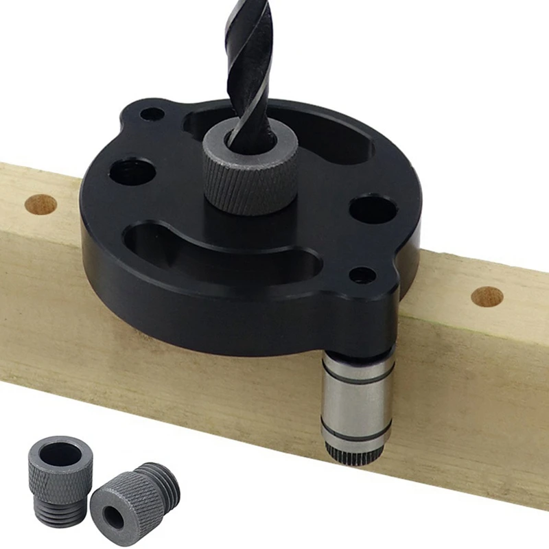
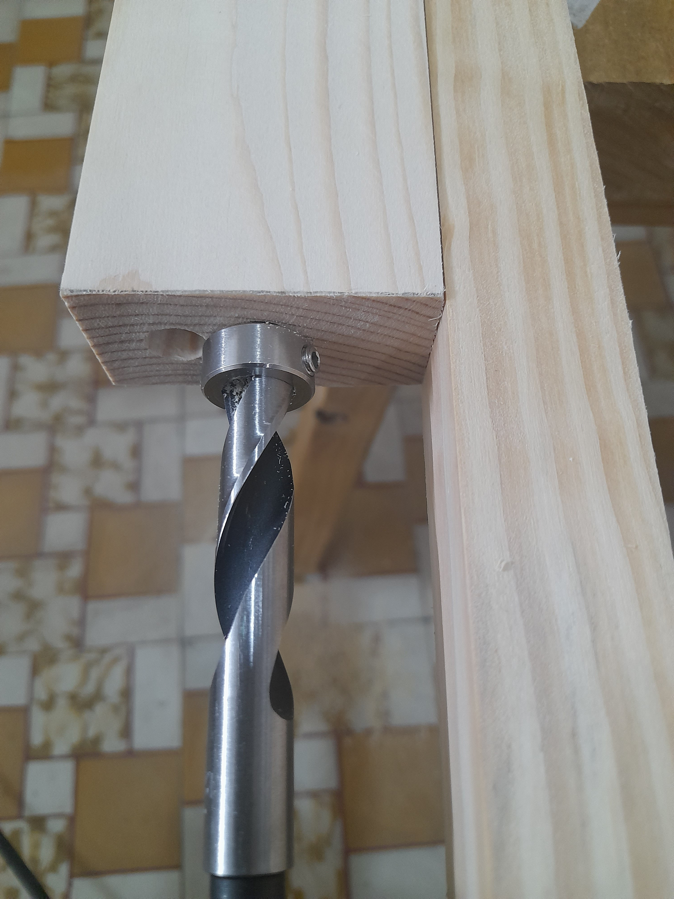
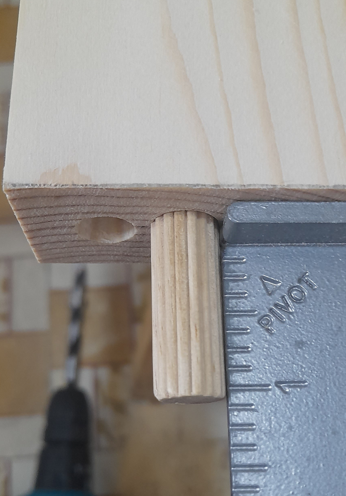
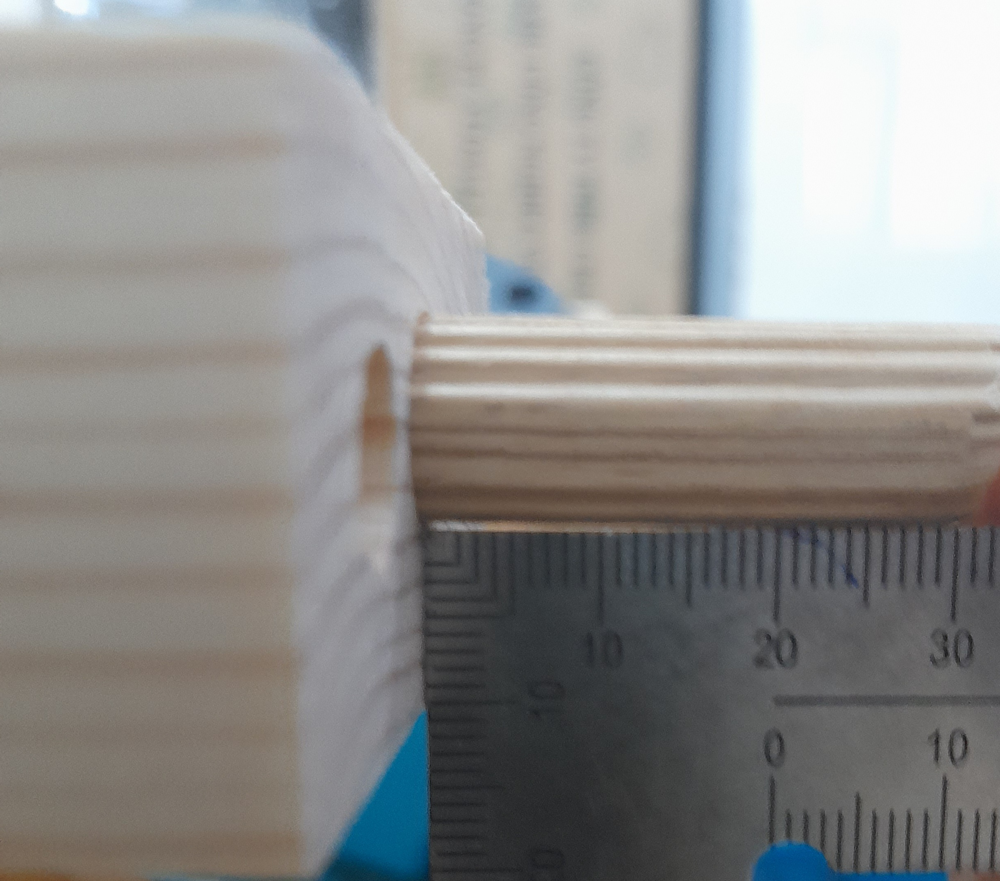

drill straight holes in wood end-grain without a jig
May 27, 2024 - ⧖ 1 minI was trying to drill straight holes in wood end-grain to make dowel joints. So I bought this jig
Source: AliExpress
But my wood plank's end-grain is too small for this jig to be stable. I tried to hold the jig with my hand (It's dangerous, do not try this) but the drill bit is still jiggle.
Desperately, I used another straight wood plank as a reference to eyeball the drill bit along left-right axis.
For up-down axis, I eyeballed the drill bit along it once then tried to hold my drill straight.
The result is quite good
The dowel is slightly crooked along up-down axis. But it is usable.
I'll add a bubble level indicator to guide my drill straight along up-down axis.
I'm happy with this technique.